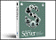

Alternative OS |
| 680x0 | 603 & 604 PPC | G3, G4 & G5 | G3, G4 & G5 | Dual-Boot | Virtualization | ||||||||||||||||||||||||||||||
|
|
|
|
|
|
Pure MacGamesAction Arcade Board Card Emulators Flight Sims Frivolous Game Utilities MMOG Puzzle RPG Sports & Racing Strategy Word Home Astronomy Calculators & Math Charts & Graphs Collections Health Hobbies & Crafts Kid Stuff Language Parental Control Recipes Science Teaching Aids Typing Weather Internet Collaboration Distributed Computing Download Managers FTP Internet Utilities iPhone IRC & IM Online Games Peer-to-Peer Radio Remote Access Usenet Video Conferencing VoIP Multimedia Audio CAD Comics DTP eBook Font Utilities Graphics iTunes & MP3 Media Center Music Photoshop Plug-ins Presentation 3D & Animation Screen Capture Video System Alternative OS Classic OS Updates Command Line Contextual Menus Cross-Platform CSMs Drivers Face-Lift Launchers Olden Screen Savers Security System Enhancements Virus Widgets X11 Utilities Backup Business Compression Database Diagnostics Disk & File Finance Handhelds Network PIMs Programming Spreadsheets Stocks Telephony Text Editors Time WWW Auctions Browsers Browser Add-ons The Cloud & SSBs HTML Editors Page Rippers RSS & Podcasting Site Tweaking Social Networking Web Cams Web Graphics Web Server Extension Key Pure Picks Software Index |
This update addresses issues and improves compatibility with Microsoft Windows XP and Microsoft Windows Vista running on a Mac computer using Boot Camp. It is highly recommended for all Boot Camp users. With the introduction of Leopard, the Boot Camp Beta program has ended. The Boot Camp Beta software will expire on December 31, and Apple won't offer further updates of Boot Camp Beta for Mac OS X Tiger. Leopard is the world's most advanced operating system. So advanced, it even lets you run Windows if there's a PC application you need to use. Just get a copy of Windows and start up Boot Camp, now included with Leopard. Setup is simple and straightforward - just as you'd expect with a Mac.
Download File Size: 228 MB - for Windows Vista 32 Download File Size: 236 MB - for Windows Vista 64 Home Page A/UX 3.1.1 A/UX is Apple's implementation of Unix (it's Apple's UNix) for various Macintosh computers. A/UX merges two computing environments, Unix and the Macintosh Finder OS, and provides the full functionality of both. A/UX is based on AT & T Unix System V.2.2 with numerous extensions from V.3, V.4 (such as streams) and BSD 4.2/4.3 (such as networking, the Fast File System, job control, lpr, NFS with Yellow Pages, SCCS and sendmail 5.64). It also provides full POSIX compliance. A/UX provides SYSV, BSD and POSIX compatiblity switches and libraries. A/UX is fully compiant with the System V Interface Definition (SVID). A/UX provides all three standard shells: sh, csh and ksh. X-Windows is also provided standard. A/UX 3.x.x incorporates System 7 for the Macintosh allowing for the use of the vast majority of Macintosh applications under A/UX. System7 and Unix and fully integrated under A/UX 3.x.x with the Unix file system being seen as a disk drive by the Finder.
jagubox mirror The BeOS is, quite simply, an operating system. An operating system provides programmers with a means of performing input and output to and from the hardware of a computer. For instance, an operating system helps applications display information on the screen, and tells applications where the user clicked the mouse. Computers can often run several different operating systems; Intel-based PCs can run Windows 3.1, Windows 95, or Windows NT, for instance, while Power Macintosh hardware could only run the Mac OS. Now users of either hardware platform have an additional choice: the BeOS. The BeOS is also particularly well-suited to digital media creation. You may be able to find a used copy on eBay etc.
BeBits Home Page CRUX PPC is a port for the PowerPC platform of CRUX. It's a GNU system with a Linux kernel that runs on NewWorld PowerPC computers. The included software works at its best speed on 750 (G3) and 74xx (G4) CPUs. CRUX PPC supports PegasosII and the major part of Apple's computers (Dual CPU included) and has special features (such as CPU Frequency Scaling) for laptops. CRUX PPC is a lightweight GNU/Linux distribution targeted at experienced Linux users. The primary focus of this distribution is "keep it simple", which is reflected in a simple tarball-based package system, BSD-style init scripts, and a relatively small collection of trimmed packages. The secondary focus is utilization of new Linux features and recent tools and libraries. CRUX PPC also has an innovative ports system which makes it easy to install and upgrade applications. CRUX PPC is based on the Per's releases of CRUX for x86. It contains software written by a lot of different people, each software comes with its own license, chosen by its author. Parts written by CRUX PPC Team are to intend as free software; you can redistribute it and/or modify it under the terms of the GNU General Public License as published by the Free Software Foundation; either version 2 of the License, or (at your option) any later version.
Home Page Darwin 9.4 Darwin is a version of the BSD UNIX operating system that offers advanced networking, services such as the Apache web server, and support for both Macintosh and UNIX file systems. It was originally released in March 1999. Darwin currently runs on PowerPC-based Macintosh computers, and is being ported to Intel processor-based computers and compatible systems by the Darwin community. Apple's open source projects allow developers to customize and enhance key Apple software. Through the open source model, Apple engineers and the open source community collaborate to create better, faster and more reliable products for our users. Beneath the appealing, easy-to-use interface of Mac OS X is a rock-solid foundation that is engineered for stability, reliability, and performance. This foundation is a core operating system commonly known as Darwin. Darwin integrates a number of technologies, most importantly Mach 3.0, operating-system services based on 4.4BSD (Berkeley Software Distribution), high-performance networking facilities, and support for multiple integrated file systems.
Get your Apple Public Source License Home Page Debian/m68k Linux 3.0 The Motorola 680x0 series of processors have powered personal computers and workstations since the mid-1980s. Debian currently runs on the 68020, 68030, 68040 and 68060 processors.
Release Information Stable Release Information Home Page Debian/PowerPC Linux 3.0 The PowerPC is a RISC microprocessor developed by IBM and Motorola. The first such chip was the 601, released in 1992. After that, the 603 and 604 series were developed, then 750, also known as the G3, after which came the G4 series. Linux for the PowerPC was first released at the 2.2.x version of the kernel. The primary resource for PowerPC Linux development is penguinppc, which includes the latest released and development Linux PowerPC kernel sources.
Release Information Stable Release Information Home Page The Fedora Project is a Red-Hat-sponsored and community-supported open source project. It is also a proving ground for new technology that may eventually make its way into Red Hat products. It is not a supported product of Red Hat, Inc. The goal of The Fedora Project is to work with the Linux community to build a complete, general purpose operating system exclusively from free software. Development will be done in a public forum. The project will produce time-based releases of Fedora Core about 2-3 times a year with a public release schedule. The Red Hat engineering team will continue to participate in the building of Fedora Core and will invite and encourage more outside participation than was possible in Red Hat Linux. By using this more open process, we hope to provide an operating system that uses free software development practices and is more appealing to the open source community.
Fedora Core on your iBook (or Mac) We produce Gentoo Linux, a special flavor of Linux that can be automatically optimized and customized for just about any application or need. Extreme performance, configurability and a top-notch user and developer community are all hallmarks of the Gentoo experience. Thanks to a technology called Portage, Gentoo Linux can become an ideal secure server, development workstation, professional desktop, gaming system, embedded solution or something else -- whatever you need it to be. Because of its near-unlimited adaptability, we call Gentoo Linux a metadistribution.
Mirrors Gentoo Linux/PPC Handbook Gentoo Linux PowerPC Development Home Page A work in progress bringing Linux to 68k Macs. This Project Has Not Released Any Files
Home Page Linux/PPC has been ported to NuBus Power Macs since June 2000. The current range of hardware support is somewhat comparable to MkLinux/PPC. Some machines are better supported and some not so well.
Home Page  Mac OS X Server 10.5.4Host Macintosh and Windows workgroups. Set up complex network services. Deploy dynamic web sites and powerful Internet services. Run enterprise applications. Mac OS X Server melds the most popular technologies from the open source community with the latest version of BSD - the long-standing foundation on which the Internet was built.
Mandriva Linux (formerly known as Mandrake Linux) was created in 1998 with the goal of making Linux easier to use for everyone. At that time, Linux was already well-known as a powerful and stable operating system. With this innovative approach, Mandriva offers all the power and stability of Linux to both individuals and professional users in an easy-to-use and pleasant environment. Thousands of new users are discovering Linux each and every day and finding it a complete replacement for their previous operating system. Linux as a server or workstation has no reason to be jealous of any other more established operating systems. Free/Open Source Free Software licensing govern the development and redistribution of Mandriva Linux. FOSS licensing provides everyone the right to copy, distribute, examine, modify and improve the system as long as the results of these modifications are returned to the community. It is this development model that allows Mandrivalinux Linux to collect the best ideas from developers & users from across the globe to result in a rich variety of techniques and solutions.
Download Page Home Page mkLinux DR3 MkLinux is a project begun by the OSF Research Institute (now Silicomp RI) and Apple Computer to port Linux, a freely distributed UNIX-like operating system, to a variety of Power Macintosh platforms running on top of OSF Research Institute's implementation of the Mach microkernel. Beginning in the summer of 1998, development work on MkLinux transitioned from Apple and OSF to a community-led effort.
NetBSD 2.1 The NetBSD Project is a collective volunteer effort to produce a freely available and redistributable UNIX-like operating system. NetBSD runs on a broad range of hardware platforms and is highly portable. It comes with complete source code, and is user-supported.
Download Page NetBSD/mac68k Home Page NetBSD/macPPC Home Page Home Page The OpenBSD project produces a FREE, multi-platform 4.4BSD-based UNIX-like operating system. Our efforts emphasize portability, standardization, correctness, proactive security and integrated cryptography. OpenBSD supports binary emulation of most programs from SVR4 (Solaris), FreeBSD, Linux, BSD/OS, SunOS and HP-UX.
OpenBSD/macppc Parent Directory Home Page Parallels Desktop for Mac is the first solution that gives Apple users the ability to run Windows at the same time as Mac OS X in a secure, stable, isolated virtual machine. Parallels Desktop works with any Intel-powered Apple, including the iMac, Mac Mini, MacBook and MacBook Pro.
Home Page The world's first server virtualization solution for the Mac platform. Take your Apple Xserve to the next level. Built on Parallels' hypervisor architecture and award-winning virtualization technology, Parallels Server for Mac enables organizations to: - Run the world's leading server applications (Microsoft Exchange, Oracle Database, Microsoft SharePoint) on their Apple Xserves - Lower software cost through increased flexibility in software options for the Xserve - Maximize the Xserve's full potential by increasing utilization - Effectively address developers' growing need to develop multiple platform application across Mac OS X, Windows and Linux platforms - Ensure business continuity with cross-platform migration and system back ups
Home Page ROCK is a Distribution Build Kit. You can configure your personal build of ROCK and easily build your own distribution (see the screenshots). It is software for managing operating environments. In a way it is a software development toolkit for building OS solutions.
Home Page Note to PowerPC (PPC) users: The PowerPC platform of computers is not supported by the newest versions of Ubuntu. However Ubuntu 6.06 is still supported and available for your machine. Ubuntu is a complete desktop Linux operating system, freely available with both community and professional support. The Ubuntu community is built on the ideas enshrined in the Ubuntu Manifesto: that software should be available free of charge, that software tools should be usable by people in their local language and despite any disabilities, and that people should have the freedom to customize and alter their software in whatever way they see fit.
Home Page VirtualBox is a family of powerful x86 virtualization products for enterprise as well as home use. Not only is VirtualBox an extremely feature rich, high performance product for enterprise customers, it is also the only professional solution that is freely available as Open Source Software under the terms of the GNU General Public License (GPL). See "About VirtualBox" for an introduction. Presently, VirtualBox runs on Windows, Linux, Macintosh and OpenSolaris hosts and supports a large number of guest operating systems including but not limited to Windows (NT 4.0, 2000, XP, Server 2003, Vista), DOS/Windows 3.x, Linux (2.4 and 2.6), and OpenBSD. VirtualBox is being actively developed with frequent releases and has an ever growing list of features, supported guest operating systems and platforms it runs on. VirtualBox is a community effort backed by a dedicated company: everyone is encouraged to contribute while Sun ensures the product always meets professional quality criteria. On this site, you can find sources, binaries, documentation and other resources for VirtualBox. If you are interested in VirtualBox (both as a user, or possibly as a contributor), this website is for you.
Home Page The new VMware desktop product for the Mac, codenamed Fusion, allows Intel-based Macs to run x86 operating systems, such as Windows, Linux, NetWare and Solaris, in virtual machines at the same time as Mac OS X. It is built on VMware's rock-solid and advanced desktop virtualization platform that is used by over four million users today. With Fusion, you can run traditional PC applications on your Mac: if you need to run PC applications, you can now do so by leveraging the power of virtual machine technology.
Home Page Proven world-wide as the preferred Linux OS for the Power architecture, v4.1 brings Terra Soft into its 8th year of Power Linux development and support. Yellow Dog Linux v4.1 marks a returning point in Terra Soft's effort to again provide a leading desktop Linux OS. Yellow Dog Linux combines the preferred desktops KDE and Gnome with the latest sound and graphic card support, leading (but not bleeding) edge kernels and stable, functional compilers for code development. And of course, the foundation applications and servers expected of all modern Linux operating systems for web, database, email, and network services.
6.1 Release December 3, 2009 Home Page |
|
|
|
|